First Cutting Baling Tips for Pasture Management
Video ID: -3_xCNu1mtI
URL: https://www.youtube.com/watch?v=-3_xCNu1mtI
Task 1: Explain the timing of first cutting and the benefits of letting grasses go to seed.
Subtask 1.1
Description: Note the current state of the pasture as extremely tall and nearly ready for baling.
Timestamp: 12.40 s
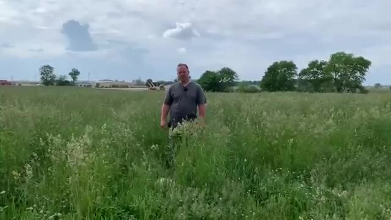
A man stands in a grassy field with trees and a cloudy sky in the background.
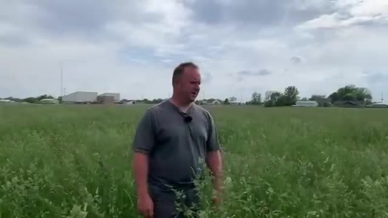
A man stands in a field of tall grass, wearing a gray shirt and a black watch.
Subtask 1.2
Description: Outline the timing for the first cutting of pasture, indicating it's usually done before Memorial Day.
Timestamp: 20.08 s
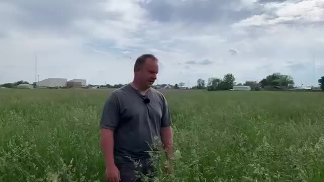
A man stands in a field, looking at the camera.
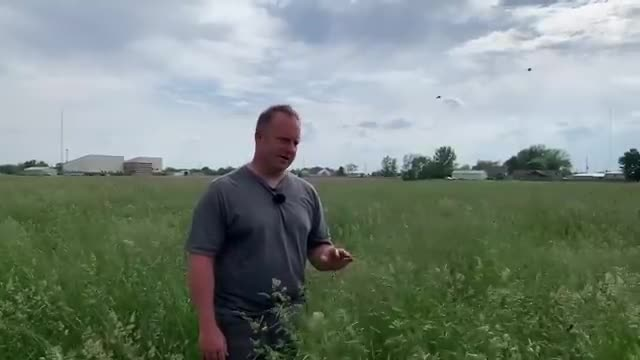
A man stands in a field, holding a small object, with a cloudy sky and buildings in the background.
Subtask 1.3
Description: Highlight how stemmy the orchard grass is, which affects its quality for feeding livestock.
Timestamp: 40.38 s
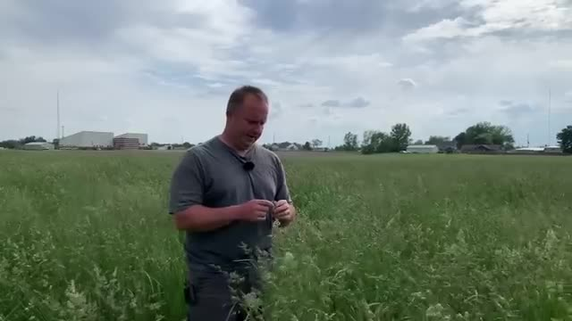
A man stands in a field, holding a small object.
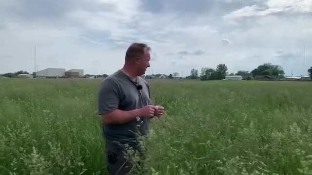
A man stands in a field of tall grass, looking off into the distance.
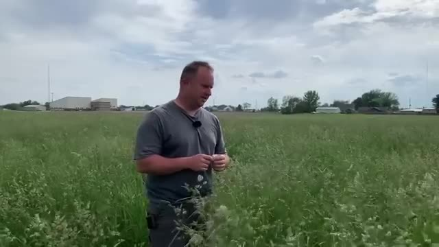
A man stands in a field, looking at the grass.
Subtask 1.4
Description: Explain why letting the pasture go to seed before first cutting is beneficial for reseeding.
Timestamp: 105.02 s
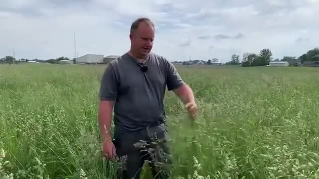
A man stands in a field, looking at tall grass.
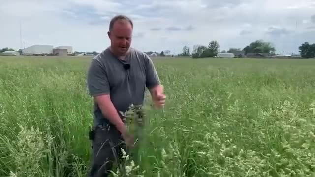
A man in a field is holding a plant.
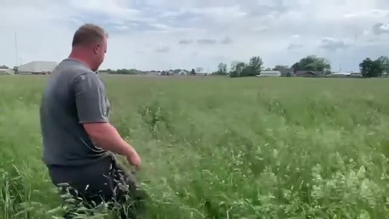
A man sits in a field of tall grass.
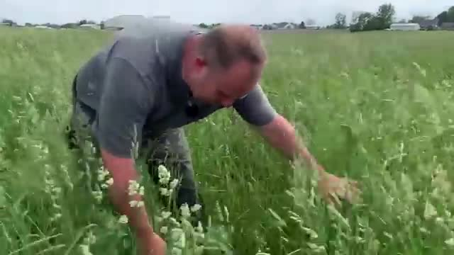
A man is bending over in a field of tall grass.
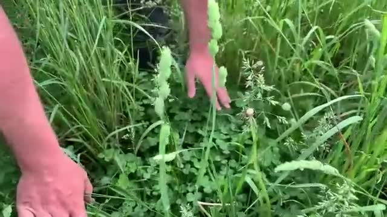
A person is tending to a garden with their hands in the grass.
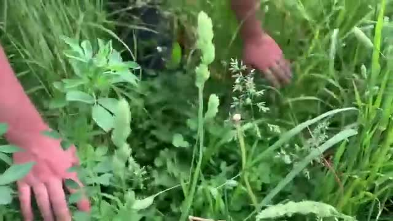
A person is tending to a patch of tall grass and weeds.
Task 2: Describe the process of reseeding the pasture naturally from seed left after baling.
Subtask 2.1
Description: Point out the grass seeds on top of the clover after the plants have gone to seed.
Timestamp: 112.50 s
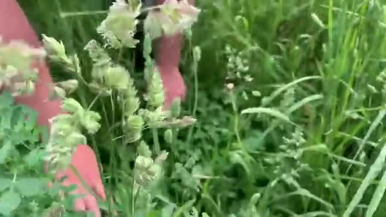
A person is picking flowers from a field.
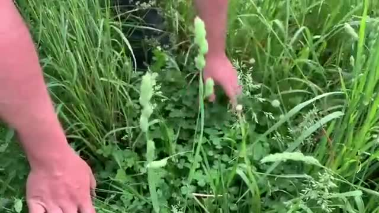
A person is tending to tall grass and weeds in a field.
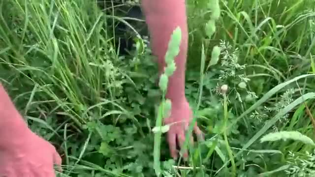
A person is walking through tall grass.
Subtask 2.2
Description: Emphasize the cost-saving benefit of naturally reseeding the pasture.
Timestamp: 121.30 s
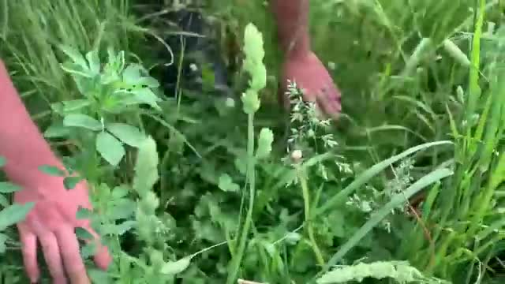
A person is tending to a patch of grass and weeds.
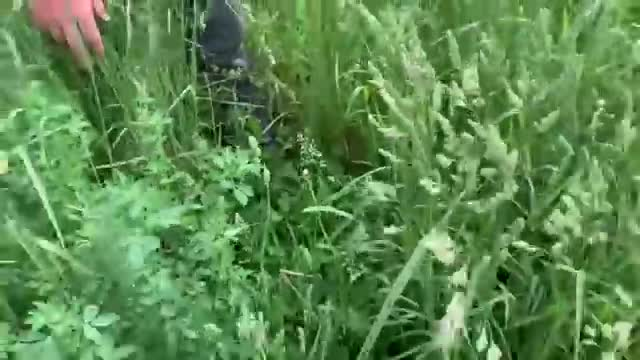
A person is walking through tall grass.
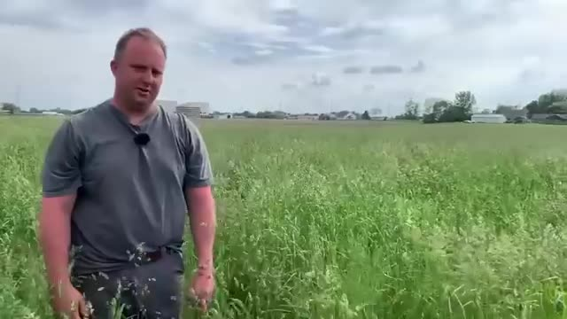
A man stands in a field of tall grass.
Subtask 2.3
Description: Explain how the reseeded pasture helps ensure better soil contact and more robust growth.
Timestamp: 137.82 s
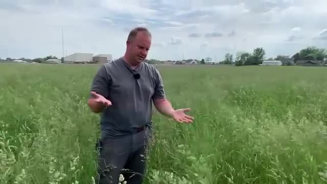
A man stands in a field, gesturing with his hands.
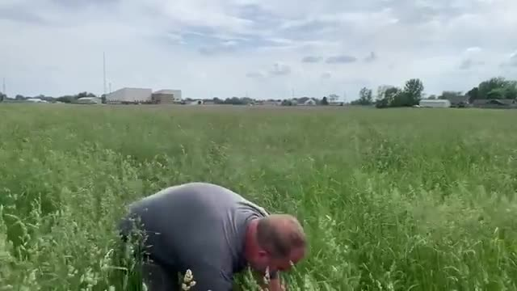
A man is bending over in a field.
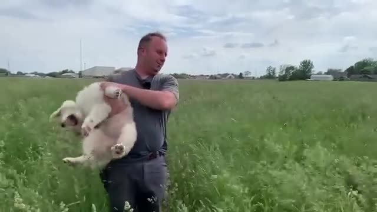
A man is holding a white dog in a field.
Subtask 2.4
Description: Recommend letting the grass go to seed before the first cutting to achieve better results.
Timestamp: 151.94 s
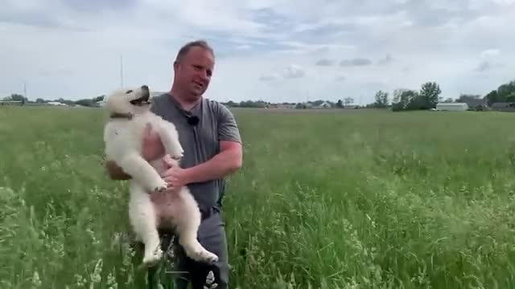
A man is holding a small white dog in a grassy field.
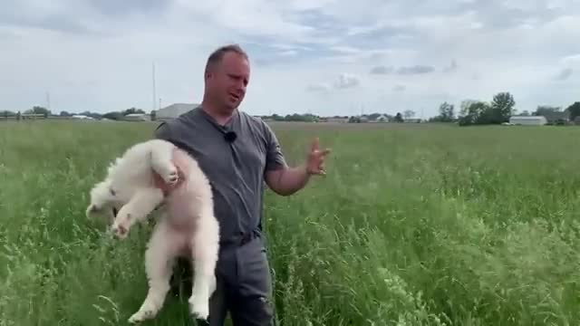
A man is holding a lamb in a grassy field.
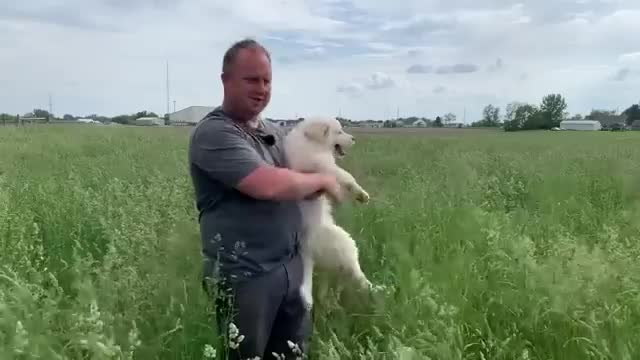
A man holds a small white dog in a grassy field.